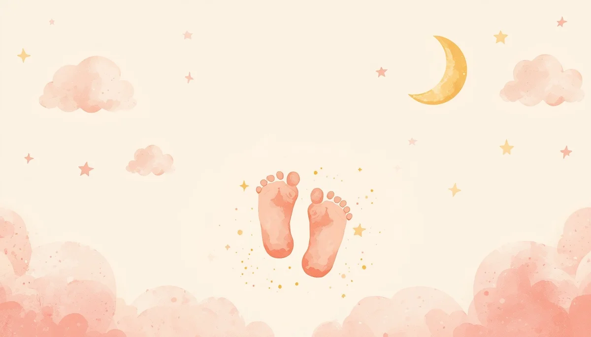

Hitos del Crecimiento: Primer Año de Vida
Primera parte de la guía: un recorrido comprensivo por el desarrollo motor, cognitivo y del lenguaje durante los primeros doce meses de grandes descubrimientos.

Índice de la Primera Parte
Contenidos del desarrollo infantil (0 a 12 meses):
- • 1. Una mirada respetuosa hacia los ritmos evolutivos
- • 2. De 0 a 3 meses: conexión sensorial y primeras sonrisas
- • 3. De 4 a 6 meses: control cefálico, volteos y balbuceos
- • 4. De 7 a 9 meses: sedestación, sed de exploración y primeros sonidos
- • 5. De 10 a 12 meses: bipedestación, autonomía y primeras palabras
1. Una mirada respetuosa hacia los ritmos evolutivos
Cada niño posee un reloj biológico único y un ritmo propio de maduración. Las tablas de hitos del desarrollo son orientaciones generales basadas en medias estadísticas, pero nunca normas rígidas. El objetivo de acompañar este proceso es observar el progreso global del pequeño sin generar alertas innecesarias ante pequeñas variaciones temporales.
2. De 0 a 3 meses: conexión sensorial y primeras sonrisas
Durante los primeros noventa días de vida, el bebé se adapta al mundo exterior a través de los sentidos y del vínculo con sus figuras de apego:
- • Motor: comienza a sostener la cabeza brevemente boca abajo y realiza movimientos simétricos con brazos y piernas.
- • Cognitivo y social: aparece la esperada sonrisa social como respuesta a la voz o el rostro familiar, y fija la mirada en los ojos de los adultos.
- • Lenguaje: se comunica mediante el llanto diferenciado y emite pequeños sonidos guturales de bienestar ("agu").
3. De 4 a 6 meses: control cefálico, volteos y balbuceos
Es una etapa de gran dinamismo corporal y apertura hacia el entorno:
- • Motor: sostiene la cabeza con absoluta firmeza, logra voltearse desde la posición boca arriba hasta quedar boca abajo y comienza a apoyarse sobre sus manos.
- • Cognitivo y social: explora los objetos llevándoselos a la boca, muestra interés por lo que ocurre a su alrededor y reconoce rostros conocidos de los extraños.
- • Lenguaje: incrementa notablemente el balbuceo, experimenta con el volumen de su voz y responde con vocalizaciones cuando le hablan.
4. De 7 a 9 meses: sedestación, exploración y primeros sonidos
El dominio del espacio cercano cambia radicalmente con la capacidad de mantenerse sentado:
- • Motor: se sienta sin apoyo de forma estable, empieza a desplazarse mediante arrastre o gateo y es capaz de pasar objetos de una mano a otra.
- • Cognitivo y social: comprende el concepto de permanencia de los objetos (sabe que algo sigue ahí aunque no lo vea) y puede manifestar cierta angustia ante la separación de sus referentes.
- • Lenguaje: combina sílabas repetitivas como "ba-ba" o "da-da" y comprende palabras sencillas de uso cotidiano como su propio nombre o el "no".
5. De 10 a 12 meses: bipedestación, autonomía y primeras palabras
El primer cumpleaños coincide con hitos motores y comunicativos extraordinarios:
- • Motor: se pone de pie apoyándose en los muebles, da sus primeros pasos de la mano o incluso de forma autónoma, y utiliza la pinza digital (pulgar e índice) con destreza.
- • Cognitivo y social: imita gestos cotidianos (como decir adiós con la mano), comprende órdenes muy sencillas y muestra preferencia clara por ciertos juguetes o personas.
- • Lenguaje: emite sus primeras palabras con significado real (mamá, papá, agua) y acompaña sus intenciones con gestos comunicativos muy claros.
Recuerda: El mejor estímulo para el desarrollo de un bebé en su primer año es el juego compartido, la disponibilidad emocional y un entorno seguro que le invite a explorar con confianza.